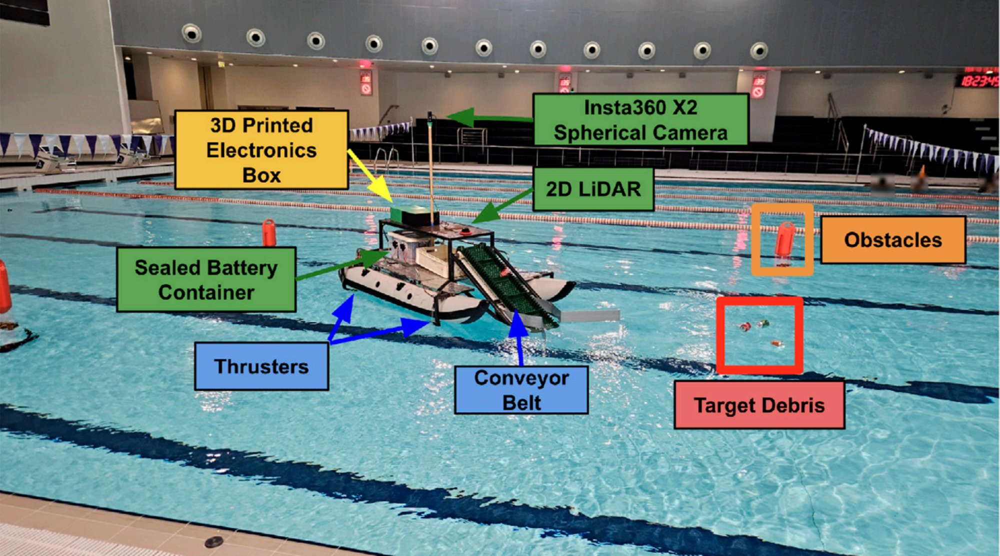
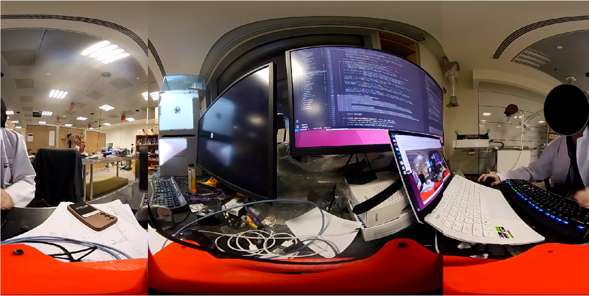
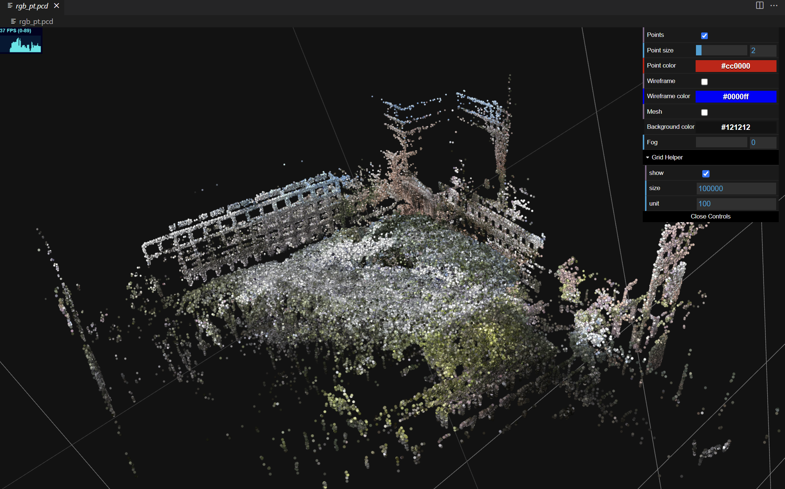
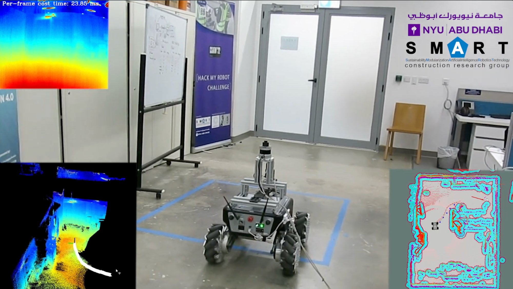
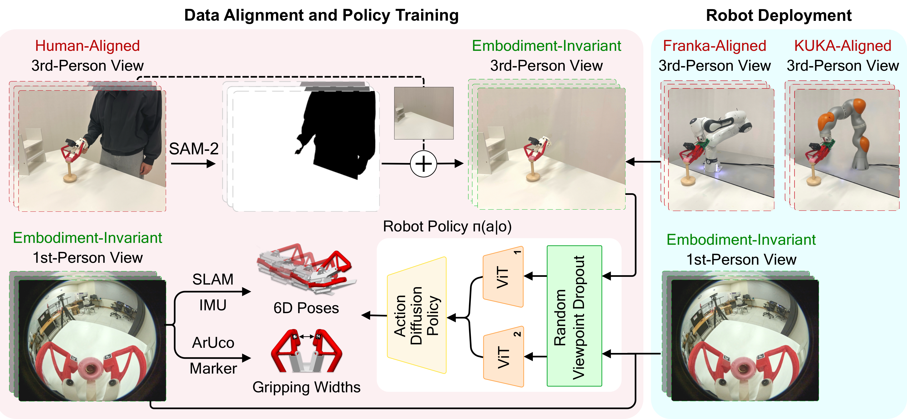
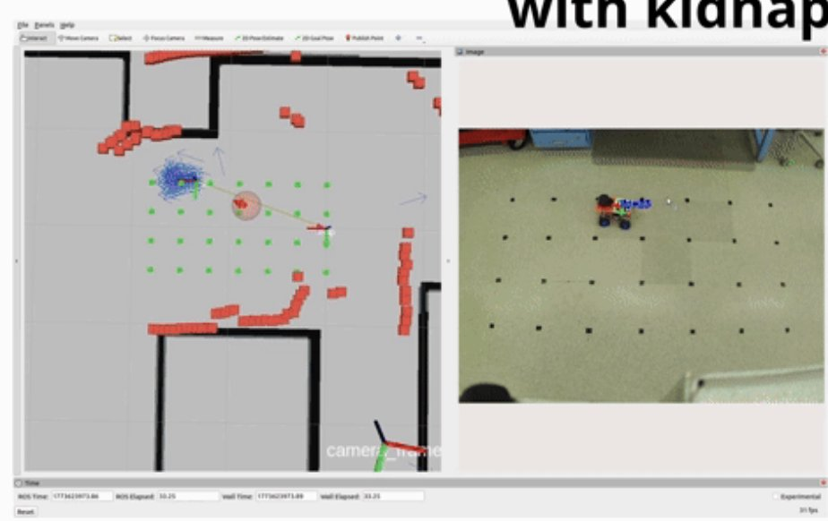

PhD Student in Electrical Engineering at NYU Tandon. Building robots that navigate, map, and clean up the world — from thermal point clouds to ocean trash retrieval.

An unmanned surface vehicle for autonomous debris collection using 360-camera, 2D LiDAR, and YOLOv11 object detection. Features high-fidelity Isaac Sim simulation with realistic buoyancy physics and wave conditions up to Beaufort Scale 4.

Open-source ROS 2 driver for Insta360 cameras enabling real-time dual fisheye and equirectangular image publishing, IMU data streaming, and on-the-fly calibration. Supports X2 and X3 at up to 3840x1920@30fps. 198 stars on GitHub.

Handheld data collection system combining 360-camera and LiDAR for creating 3D visual maps via R3LIVE SLAM. Includes a cross-platform GUI for remote sensor control, recording, and real-time monitoring. NYU UGSRP 2024 project at AI4CE Lab.

Autonomous thermal point cloud generation for construction environments. Integrates FLIR A65 infrared camera, Ouster LiDAR, and pan-tilt unit on a SUMMIT-XL robot using ROS. Published at ICRA 2023 Future of Construction Workshop.

A scalable multi-view data collection interface for cross-embodiment robot learning. Incorporates exocentric views into robot-free training data to avoid distribution shifts between training and deployment. Custom lightweight gripper design.

A two-wheel drive robot with Extended Kalman Filter and Particle Filter localization. Fuses wheel odometry, camera odometry, and LiDAR for robust pose estimation. Includes Docker workflow and SLAM-based map generation.
Pursuing doctoral research in robotics and control.
Managed manufacturing equipment including 3D printers (Ultimaker, Bambu, Creality), laser cutters, and power tools. Supported students with course and extracurricular manufacturing projects.
Migrated Diablo Balance Robot simulation to ROS 2. Created 6-DOF Kinova arm simulation. Designed zero force control algorithms for base stabilization. Built the ATRON autonomous ocean cleanup vehicle.
Designed the Curb2Door handheld data collection system. Developed the Insta360 ROS driver. Created cross-platform GUI for sensor control. Performed LiDAR-camera calibration and 3D Gaussian Splatting data processing.
Integrated thermal camera, LiDAR, and pan-tilt mechanism on SUMMIT-XL robot for autonomous thermal mapping. First-author publication at ICRA 2023.
Dubai, May 2025 — Custom hardware and software pipelines for imitation learning with a novel lightweight high-force gripper design.
Abu Dhabi, Apr 2025 — Autonomous water surface vehicle for floating debris extraction using 360-camera, IMU, and 2D LiDAR with ROS 2.